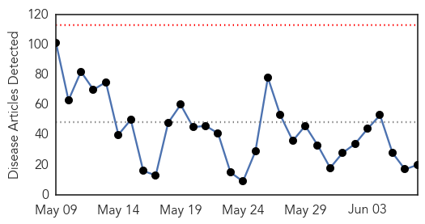
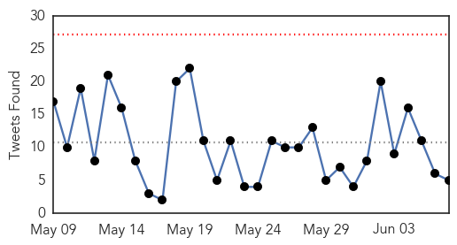
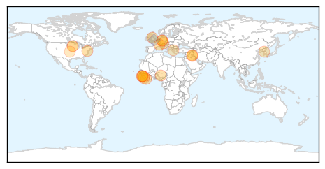
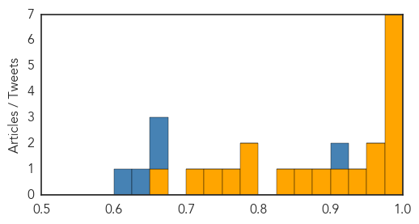
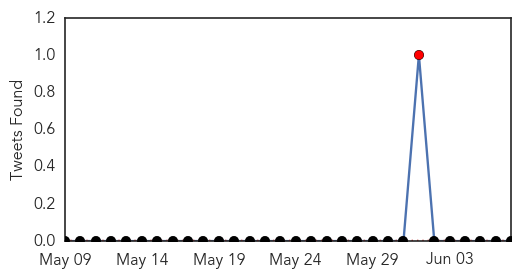
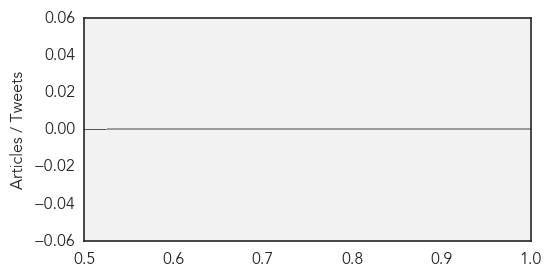

Ebola
30-Day Web Trend
0 alerts, 0 warnings

30-Day Twitter Trend
0 alerts, 0 warnings

Article Locations
Article Confidences
Top Articles:
- 0.998
- Rainy season now hampering Ebola response in West Africa
- 0.995
- Guinea Extends Ebola Emergency Measures
- 0.993
- WHO lowers Ebola toll by nearly 1,000 after Liberia counting ‘error’
- 0.992
- David Cameron and Barack Obama launch hit squad to battle pandemics like Ebola
- 0.987
- preventing the next pandemic
- 0.984
- World health leaders asks G7 to backstop creation of emergency response unit to overcome global outbreaks of diseases like Ebola
- 0.978
- Sierra Leone Burial Teams Lauded for Efforts to Stop Ebola - Sierra Leone
- 0.969
- Prime Minister calls for 'wake-up to the threat from disease outbreak'
- 0.952
- New Brunswick doctor recalls working in Ebola-stricken regions
- 0.950
- Sierra Leone, Guinea Intensify Cross-Border Collaboration to end Ebola
- 0.923
- Ohio has monitored about 375 travelers under Ebola protocols - Crescent-News
- 0.889
- ‘Black Death’ squad to stop pandemics
- 0.863
- The economic consequences of the MERS outbreak
- 0.837
- Cameron announces rapid-response team for disease outbreaks
- 0.783
- David Cameron to unveil 'disease detectives' plan
- 0.780
- PM to announce 'disease detectives'
- 0.753
- Minnesota Man Helps in Fight Against Ebola in West Africa
- 0.735
- North Korea plans to show off for tourists
- 0.703
- Minnesota man helps in fight against Ebola in West Africa
- 0.667
- Breaking the Scourge in Liberia
Top Tweets:
- 0.981
- Mankato man directs organization's fight against deadly Ebola outbreak in Liberia - Minneapolis St... http://t.co/tgOjwHJGmU ebola EVD
- 0.932
- Ebola Spreads Suspicion and Rumors in Guinea - NDTV http://t.co/SHdiVUcHcF ebola EVD
- 0.920
- Ebola spreads suspicion and rumours in Guinea - News24 http://t.co/Ldxic9nM79 ebola EVD
- 0.904
- Ebola spreads suspicion and rumours in Guinea - Yahoo News http://t.co/yhUlxicDlq ebola EVD
- 0.759
- Mankato man directs organization's fight against deadly Ebola outbreak in Liberia - Minneapolis Star Tribune http://t.co/ajyJht05sg
- 0.742
- Cameron calls for Europe to go big to fight Ebola - Politico http://t.co/h7RESPY2CO ebola EVD
- 0.667
- One of the saddest things about this ongoing Ebola outbreak is that people still seek medical help late. Suspicion, fear & denial persist.
- 0.533
- Communications is such a big problem with Ebola. https://t.co/Ge19IOWkgR
Mumps
30-Day Web Trend
3 alerts, 0 warnings
30-Day Twitter Trend
1 alerts, 0 warnings

Article Locations

Article Confidences
Top Articles:
-
No articles found for Jun 07, 2015
Top Tweets:
-
No tweets found for Jun 07, 2015